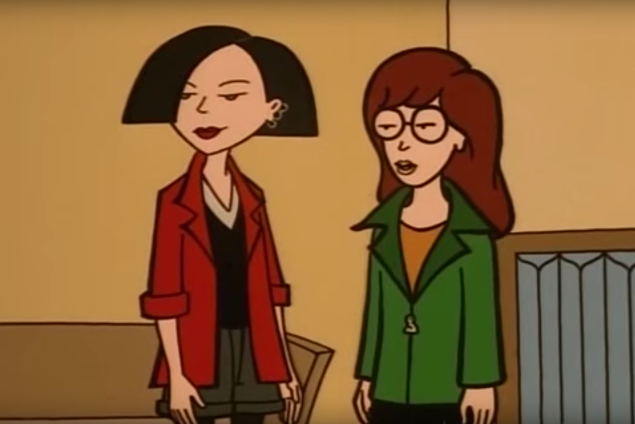

Javascript
Daria é uma série de animação americana criada por Glenn Eichler e Susie Lewis Lynn para a MTV. A série enfoca Daria Morgendorffer, uma adolescente inteligente, amarga, e um tanto misantropa que observa o mundo ao seu redor. A história se passa na fictícia cidade americana suburbana de Lawndale, e é uma sátira da vida de colegial, cheia de alusões e críticas da cultura popular e classes sociais.